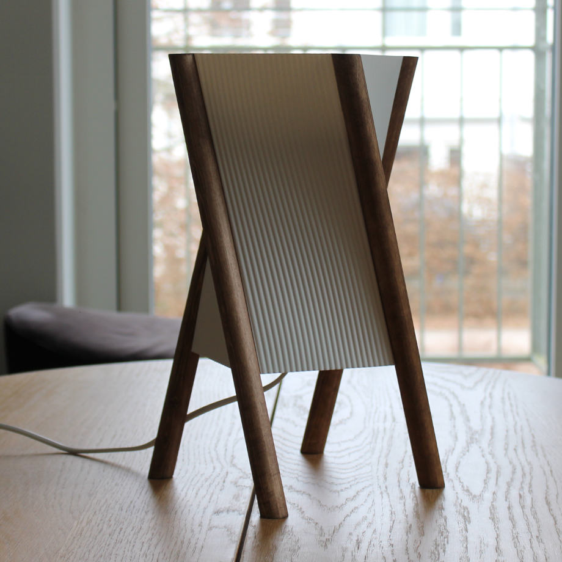
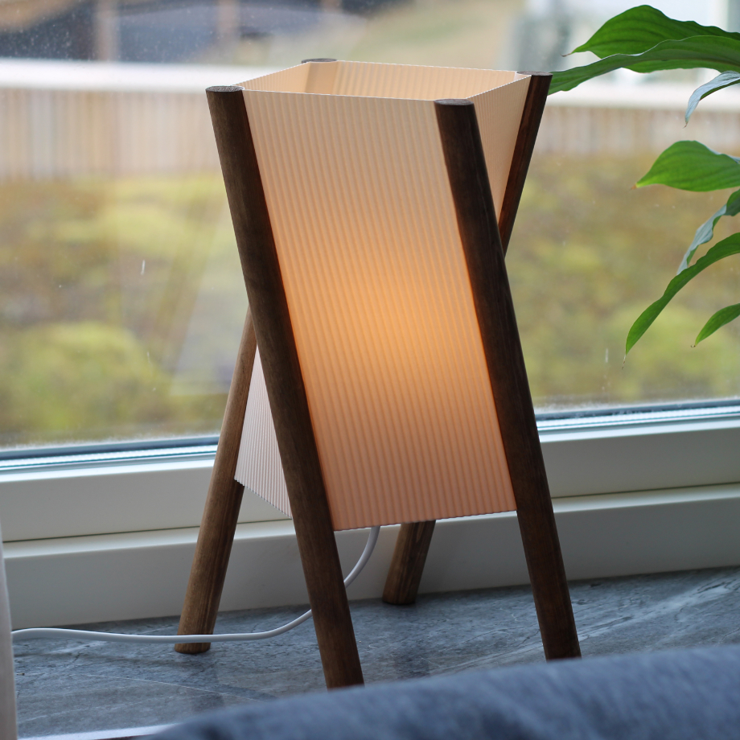
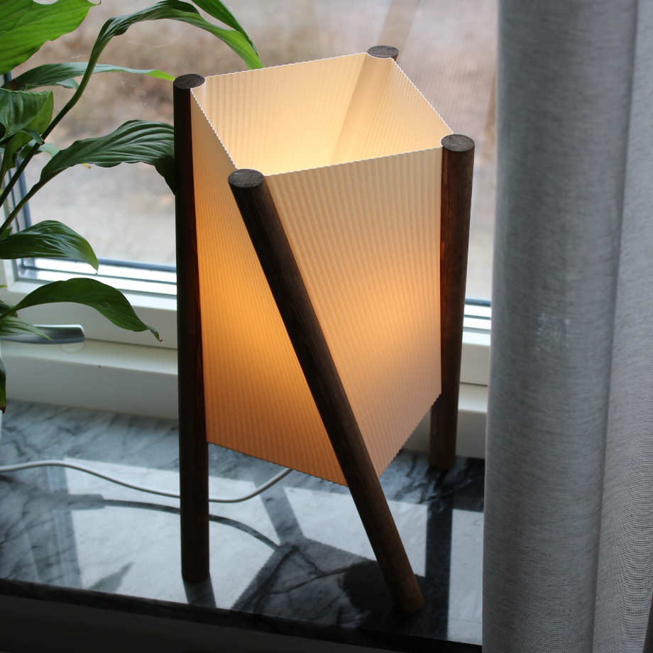

Tvingade mig själv att designa en lampa som använde rundstavar i trä
Blev denna lutande grejen



Har inte designat och byggt något på någon vecka så började bli uttråkad
Satte lite press på mig själv och tänkte att jag skulle designa och bygga något på typ en dag
Blev ganska simpel men inte asful iallafall
Har inga bilder från när jag gjorde den för det är egentligen bara att såga träbitarna i rätt vinkel, betsa och sen limma ihop allt
Gjorde en lite jigg för för att få till de vinklarna för det kunde kändes rörigt att få till annars